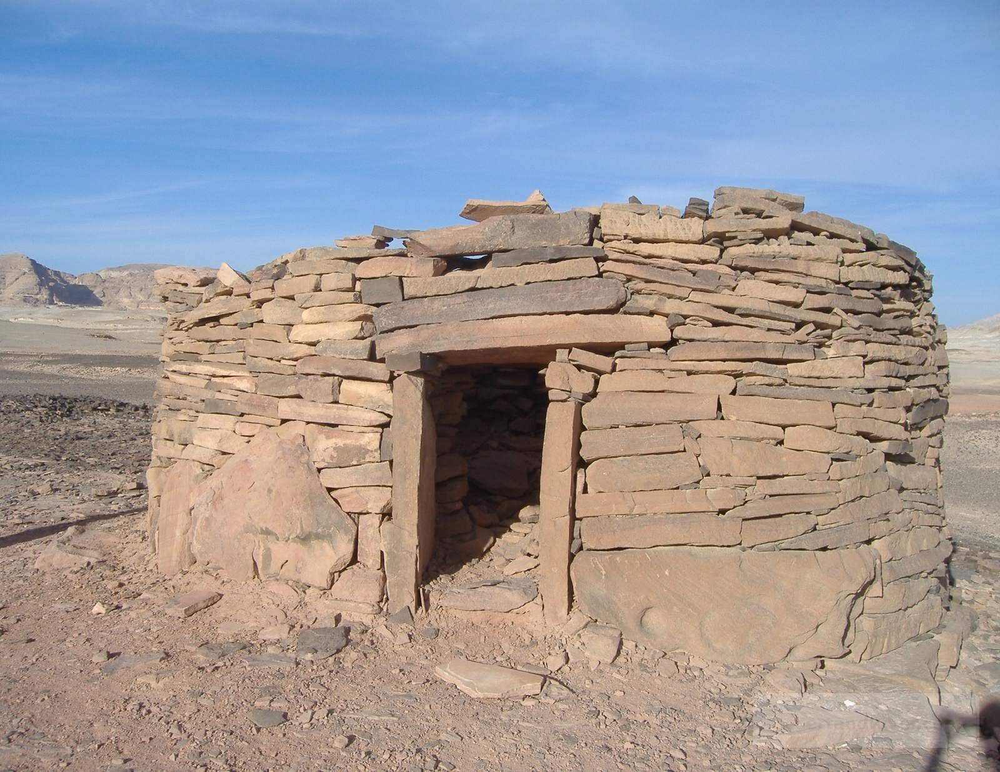

De meeste woestijntochten vanuit Dahab racen van fotostop naar fotostop. Deze niet. Onze dagtocht naar Arada is een dagvullende woestijnsafari door het zandsteenlandschap van Zuid-Sinaï: rotsinscripties, een echte canyonwandeling, fossielen, 5000 jaar oude graven en als afsluiter een zandduin. Joseph en Annet leiden de tocht samen, met meer dan 30 jaar gidservaring in de Sinaï en samen bijna 20 jaar in Dahab.

Rotsinscripties & de Double Canyon
Om 8.00 uur vertrekt de jeepsafari uit Dahab, landinwaarts richting Wadi Arada. De eerste stop is de Rots van de Inscripties van Arada: oude tekeningen van kamelen, jagers en het dagelijks leven van de bedoeïenen, gekrast in het zandsteen. Daarna wandelen en klimmen we door de Double Canyon, met één steile afdaling met behulp van een touw, langs een stuk versteend koraalrif met schelpfossielen die nog zichtbaar zijn in de rots.

Lunch in de woestijn & de Nawamis-graven
Terwijl jij in de canyon bent, maakt onze woestijnkok ter plekke een verse lunch klaar: geen restaurant, geen menukaart. Na de lunch brengt een korte rit ons naar de Nawamis: ronde stenen graven van zo'n 5000 jaar oud, ouder dan de piramides en een van de oudste overdekte bouwwerken die nog ergens op aarde staan.

Het is langzaam reizen in de echte zin van het woord. Eén dal, één dag, echt goed gezien.
Dragonhead Mountain & zandduin Hedoda
We gaan verder naar de Dragonhead Mountain (Gebel Makhroum) voor het uitzicht over het zandsteenlandschap en de duinen eronder, en eindigen bij het zandduin Hedoda: beklim het, sandboard naar beneden of ga gewoon bovenop zitten en kijk hoe het licht verandert voordat we terugrijden naar Dahab.
Inbegrepen
- Al het vervoer van en naar Dahab
- Alle maaltijden & drankjes tijdens de tocht
- Je woestijngidsen
- Alle entreegelden
Niet inbegrepen: fooien en persoonlijke uitgaven.
Neem mee
- Goede wandelschoenen
- Je paspoort (controleposten op de wegen in het binnenland)
- Wat contant geld voor souvenirs van de lokale bedoeïenen
Prijs
€75 p.p. gedeelde tocht
€300 per auto, privétour
Meer dan één dag?
Is één dag niet genoeg? Onze tweedaagse woestijntocht met overnachting volgt dezelfde route in een rustig tempo, met een nacht in de woestijn ertussen.
Bekijk de woestijntocht met overnachting